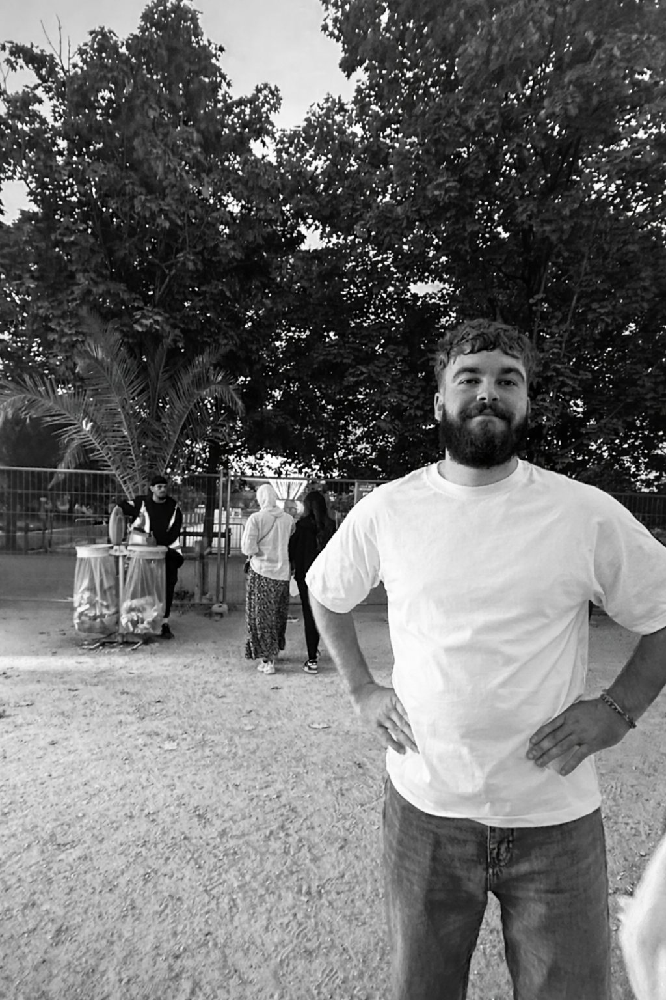

Je suis un développeur web curieux et rigoureux, toujours motivé pour apprendre de nouvelles technologies et relever des défis techniques.
J'ai eu la chance de vivre 6 mois en Australie, où j'ai pu découvrir de nouvelles cultures et développer mes compétences en anglais.
À côté de ça je fais des créations en terre cuite, comme des cendriers ou des support pour encens. C'est très médidatif et ça me permet de me détendre après une journée de code intense.
Voir mon CV
Beway Intranet est une application web interne permettant
aux employés d’une entreprise de centraliser certaines
fonctionnalités utiles au quotidien, comme la demande de
congés ou encore la publication d'annonce pour les
administrateurs.
Ce projet m’a permis de travailler sur la gestion
d’utilisateurs, la création d’API et l’interface d’un
intranet moderne.
Technologies utilisées : React, NodeJS, Express, MongoDB
ThermiUp est un site web vitrine conçu pour présenter les
services d’une entreprise spécialisée dans les solutions
thermiques. Il s'agit de mon tout premier projet web.
Ce projet m’a permis de travailler sur le développement
backend en créant un thème wordpress personnalisé. Il permet
également au propriétaire du site de gérer facilement le
contenu via l’interface d’administration de Wordpress.
Technologies utilisées : Wordpress, PHP, MySQL, Javascript
Lecorrejules10@gmail.com
Me contacter